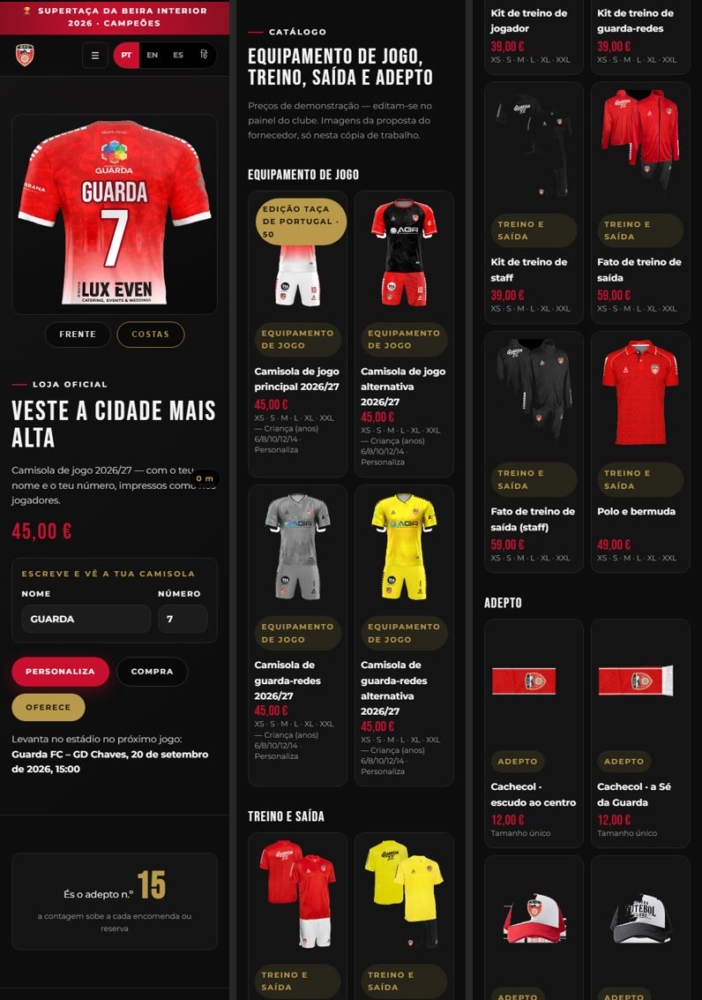
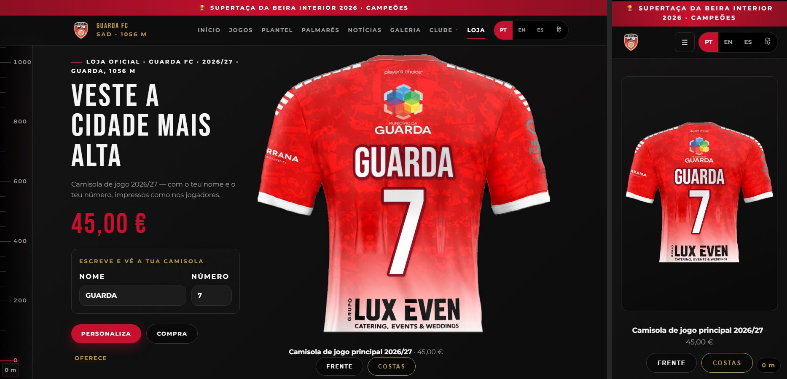
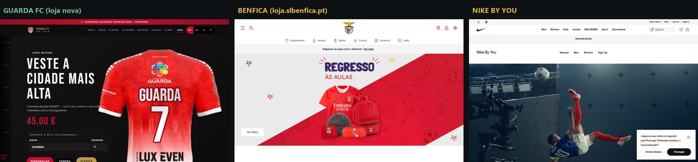
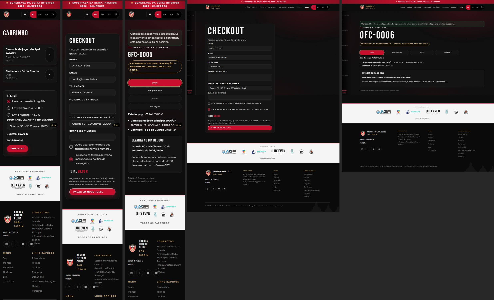
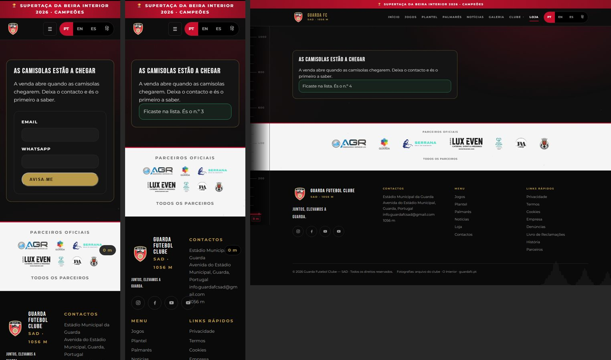
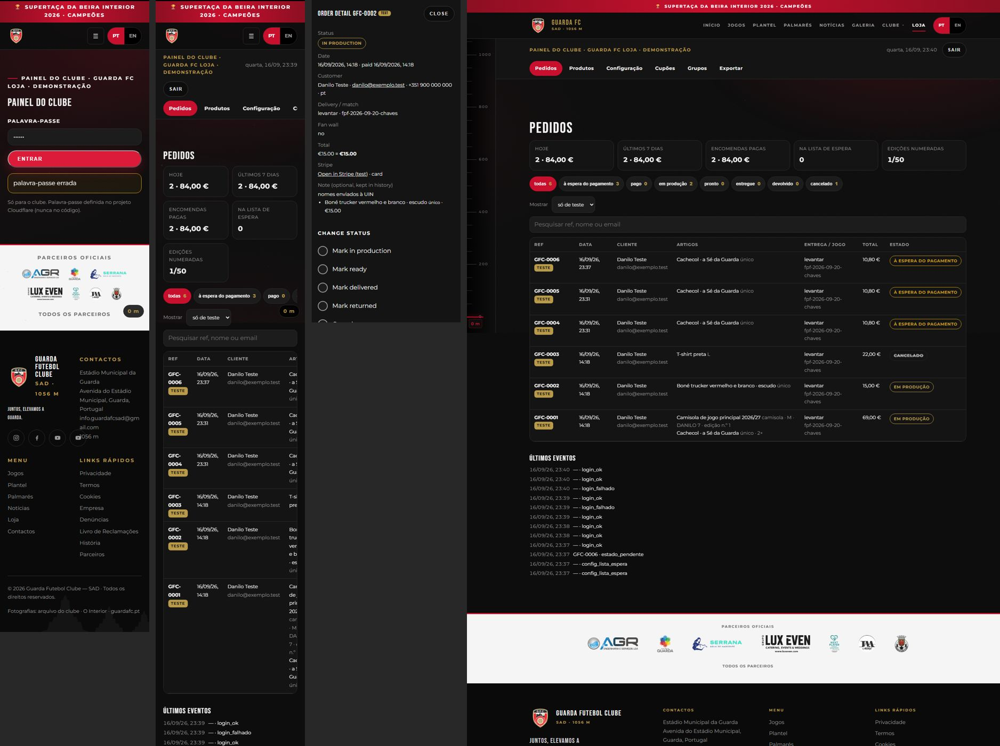
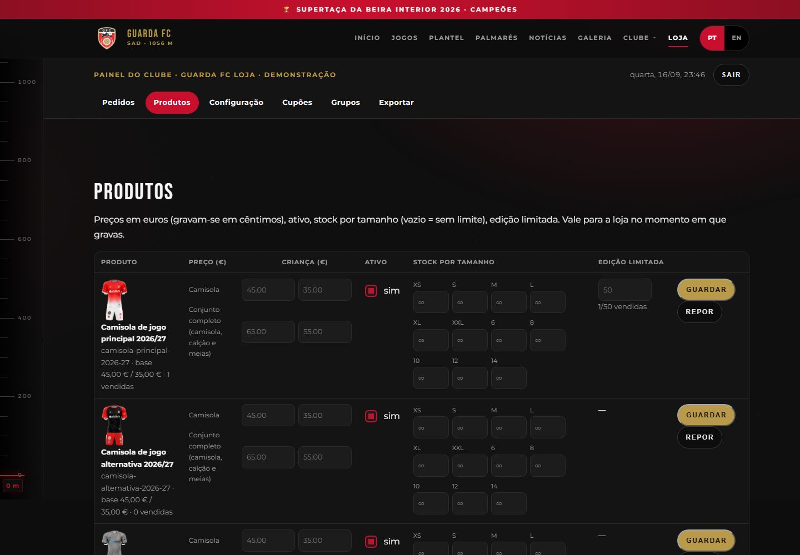
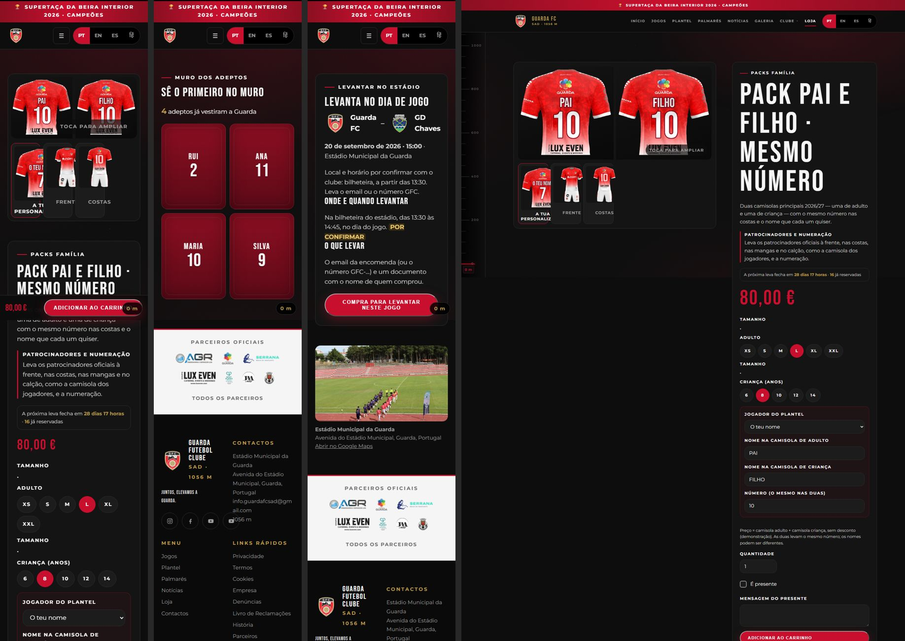
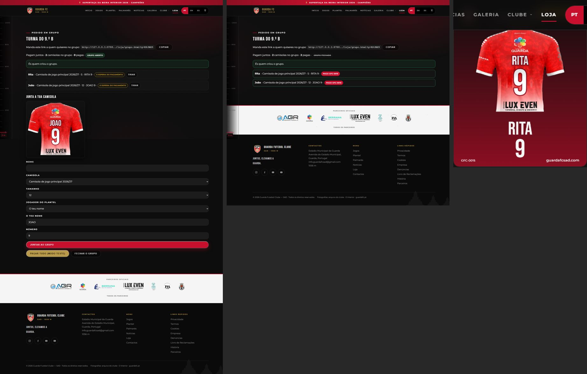
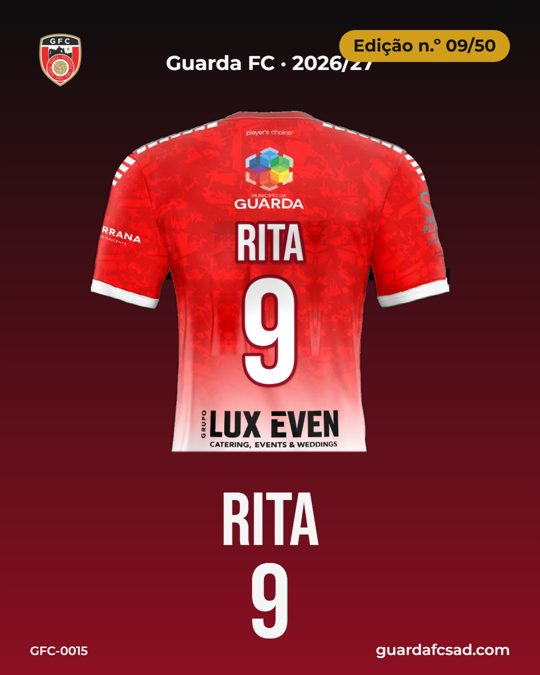

Loja online do Guarda FC — provas da missão de 14–17 de setembro de 2026
Pré-visualização a funcionar: guarda-fc-loja.pages.dev/loja/ · painel do clube: /loja/admin/ (responde «painel por configurar» até o clube pôr a palavra-passe). O site vivo guardafcsad.com não foi tocado. Nenhuma imagem gerada por IA: as camisolas são os renders reais da proposta do fornecedor (UIN/Select) e o nome/número é composto por cima, no browser.
Vídeo de 60 segundos — o ecrã tal como está
Home com o nome e o número a aparecerem ao vivo → catálogo → ficha (frente, escudo, «a tua») → configurador com o PNG partilhável → carrinho → checkout a sério (Stripe em modo de teste, servidor falso em local) → a página da encomenda a passar sozinha de «à espera do pagamento» a «pago» quando o webhook chega → painel do clube (pedidos, detalhe, produtos) → muro dos adeptos → levantar no estádio.
Primeiro ecrã: antes e depois da segunda ronda


A camisola verdadeira, com o teu nome

20 segundos no telemóvel: a escrever o nome e o número e a ver a camisola mudar.
Comprar (bloco 3)


Painel do clube (bloco 4)


Primeiro mundo (bloco 5)



Medições (fiscal visual, grelha 0–100 do livro de regras)
| Página | Antes | Depois |
|---|---|---|
| Home | 76 | 100 (0 defeitos; também online) |
| Ficha da camisola | 76 | 94 |
| Configurador | 66 (não publicava) | 94 |
| Movimento reduzido | 2 falhas | 0 |
| Origem das imagens | 1 falha | 0 (102 imagens, todas do clube ou do fornecedor) |
| Hindi a sério | 86 nós em latim | 10 (só o nome e o email do clube) |
O que falta e só o clube/Danilo podem dar
- Login na Cloudflare para criar a base D1 e pôr as variáveis (palavra-passe do painel, chaves de TESTE da Stripe, email, Telegram). Até lá a loja mostra tudo mas não fecha compras online.
- Conta Stripe de teste do clube (as chaves vivas serão sempre as do clube — nunca da Bora).
- Preços reais (os atuais são de demonstração e editam-se no painel), fotos do produto final quando as camisolas chegarem, e os textos legais revistos pela Dina.
Relatório completo com todas as provas no repositório do site (loja/provas/). Página gerada a 17/09/2026.